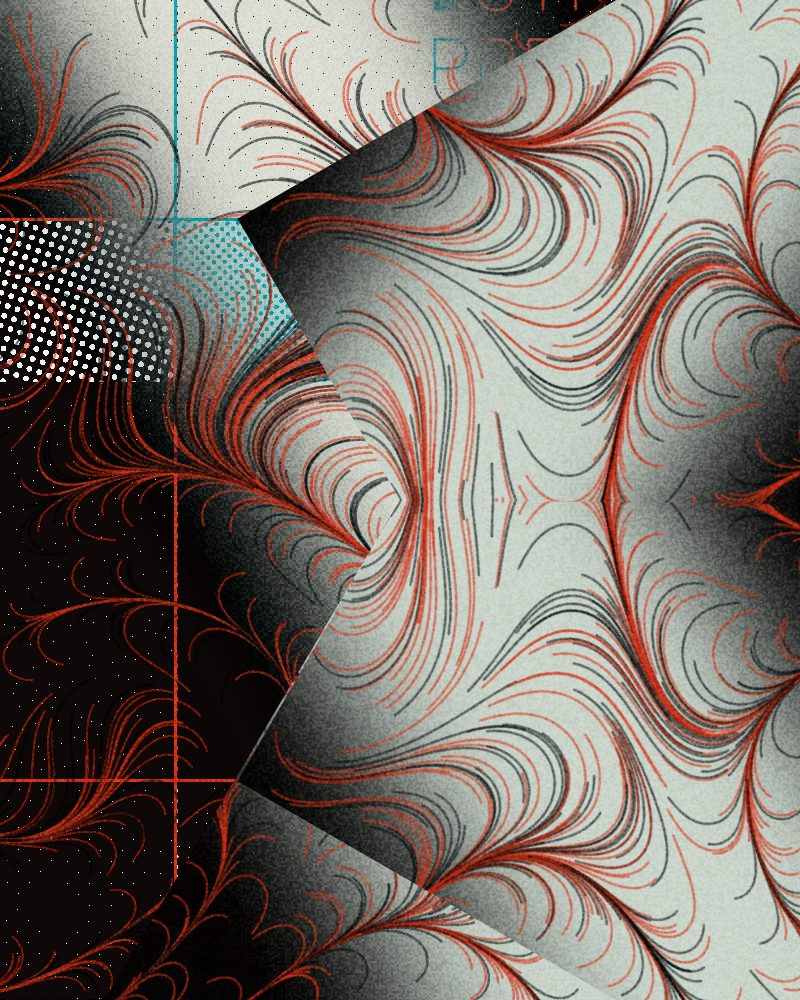

Giorno 1800

Pare che detto sabato comprende. Pare.
ho letto "Come non detto"; "detto" lo capisco solo per definizioni; mi sta vicino a giorno, tracce, notte, nome; nel suo significato c'è massima; ricerca "grande" (esplorare): Che forma ha grande?; sferzata: tutta materia, nessuna forma
Oggi: detto. Ho letto "Come non detto"; "detto" lo capisco solo per definizioni; mi sta vicino a giorno, tracce, notte, nome; nel suo significato c'è massima; ricerca "grande" (esplorare): Che forma ha grande?; sferzata: tutta materia, nessuna forma.
Da Wikipedia: «giovane romano è omosessuale».
Ho scritto, messo una forma geometrica (2 volte), flusso, sporcato di grana, cambiato il fondo, caleido, affettatore. Ho annullato 3 gesti dopo averli guardati.
Detto o proverbio? Nessuno lo sa. Adagio: brano che si dà delle arie. Pare che detto sabato comprende. Pare..
Ha retto: Fuori centro quanto basta: c'è una forza che tira.
come ne ho discusso con me stesso — la tengo
formale (pro, 1.25): Fuori centro quanto basta: c'è una forza che tira. — regge
occhio (pro, 1.00): Le diagonali (49%) mettono tutto in caduta. — regge
intenzione (pro, 0.75): Viene da: Come non detto. — regge
pubblico (pro, 1.00): Si legge: si capisce cosa sto facendo. — regge
materia (pro, 1.00): Ha una pelle: si sente la materia. — regge